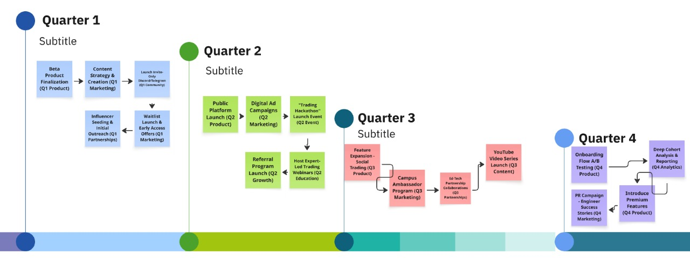

Executive Summary
Our vision is to position Nubra as the default platform for every engineer in the country to begin their trading and investing journey. This GTM strategy outlines a 1-year plan to capture a serviceable market of 36,000 activated trading accounts by focusing on an API-first product, targeted marketing, and strong community engagement. Total Addressable Market (TAM) Represents the total market demand for a product or service, signifying the theoretical upper ceiling of the opportunity. Defines the maximum potential revenue if a business were to capture 100% of the market share. Used to illustrate the ultimate scale and long-term potential of a market segment. Serviceable Addressable Market (SAM) The segment of the TAM that a company can realistically target with its current business model, products, and geographical reach. Defines the specific portion of the total market that the business is equipped to serve. This metric effectively narrows the market from the theoretical total to a practical target area. Serviceable Obtainable Market (SOM) The portion of the SAM that a business can realistically capture in the short term, typically within 1-3 years. Represents the concrete, near-term sales or user acquisition goal that a go-to-market strategy is designed to achieve. This figure is determined by considering internal resources, budget, and the existing competitive landscape.
Market Sizing Analysis
The analysis follows a TAM-SAM-SOM model to identify our target market segment within the engineering community.
1-Year Go-to-Market Timeline
The GTM plan is phased across four quarters, focusing on Foundation, Launch, Growth, and Optimization.
Analysis of Outcomes
The success of the Go-to-Market plan will be measured through a data-driven framework focusing on the entire user lifecycle. The analysis will be structured, continuous, and focused on generating actionable insights.
Analytical Framework
The AARRR (Acquisition, Activation, Retention, Referral, Revenue) framework will be used to structure the analysis, ensuring every stage of the user journey is monitored.
Tools for Analysis
- Product Analytics: Tools like Mixpanel or Amplitude to track user behavior within the platform.
- Web Analytics: Google Analytics to monitor traffic sources and user acquisition channels.
- Backend Database: Direct SQL queries to analyze detailed trading patterns and user segmentation.
Core Analytical Processes
- Funnel Analysis: To track conversion rates at each step of the onboarding process and identify bottlenecks.
- Cohort Analysis: To group users by sign-up week and track their activity over time, measuring long-term retention.
- Channel Performance Review: To conduct weekly reviews analyzing which marketing channels deliver the highest quality users at the lowest cost.
KPI Dashboard
Success will be measured against a set of key performance indicators tracking the entire user funnel.